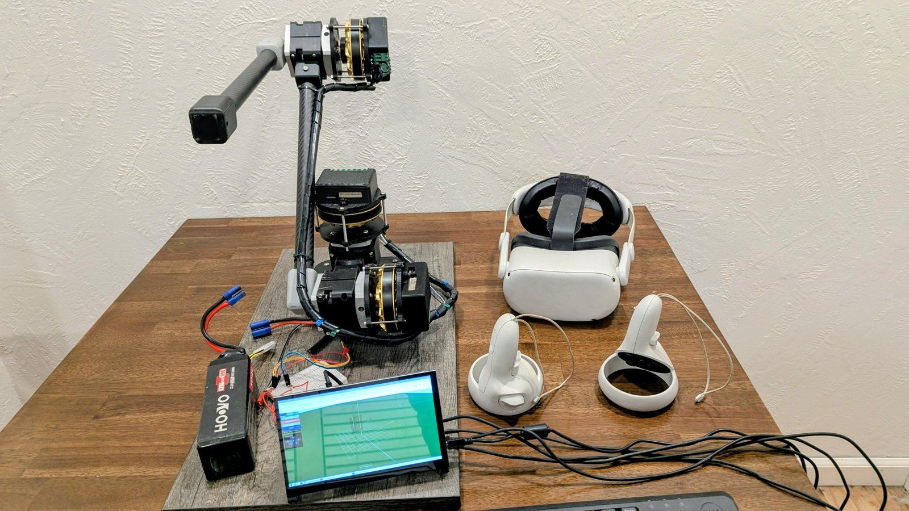
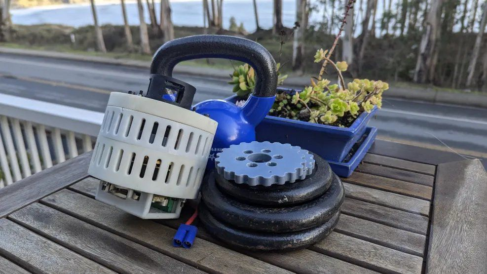
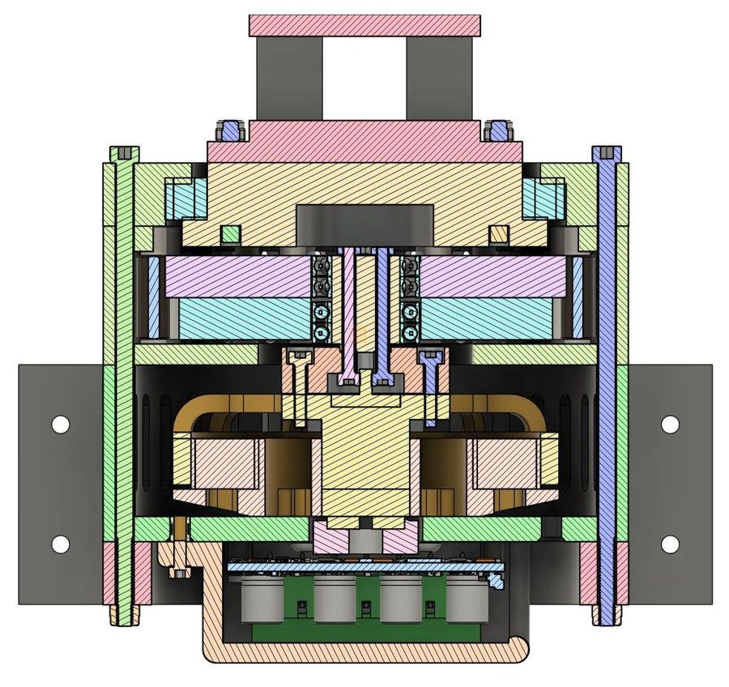
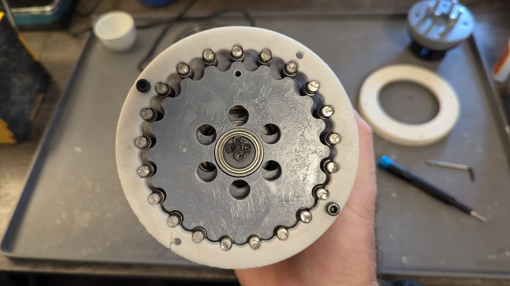
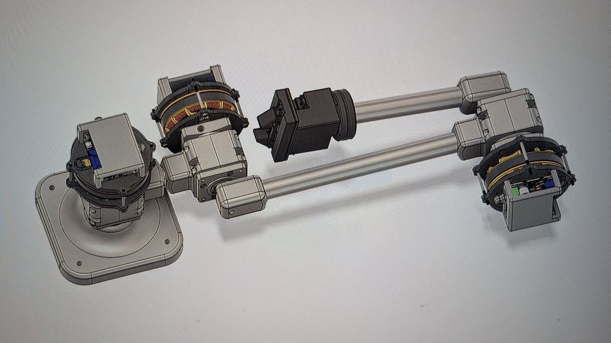
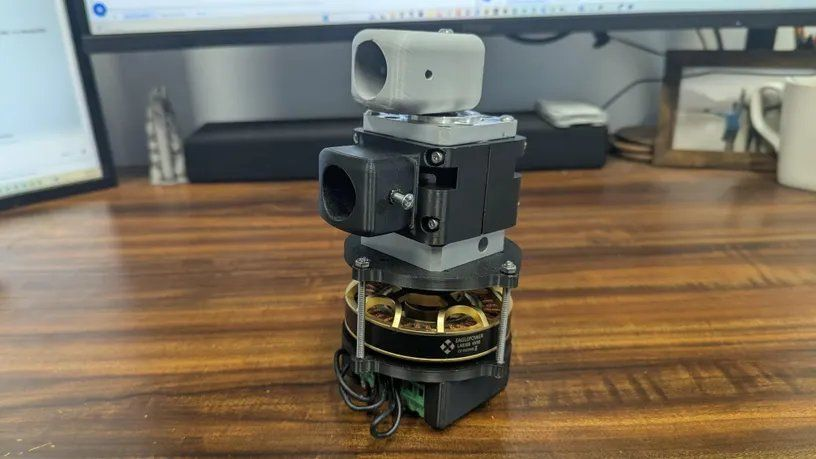
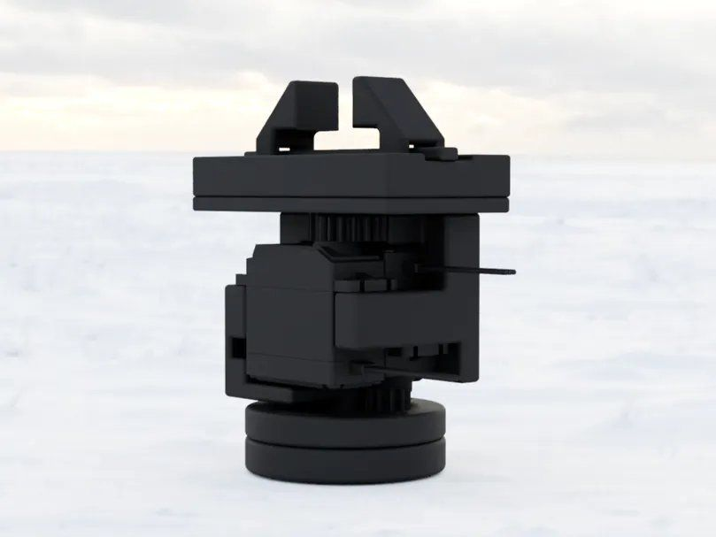
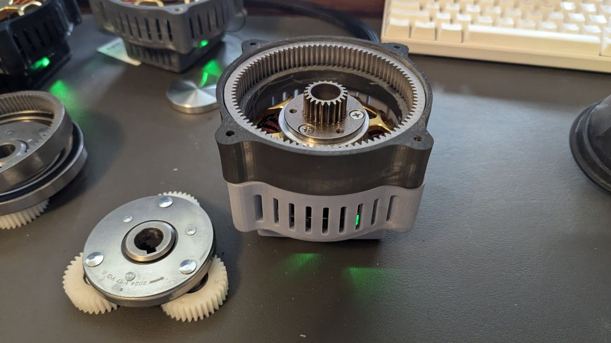
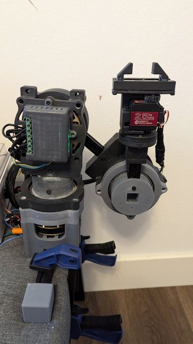
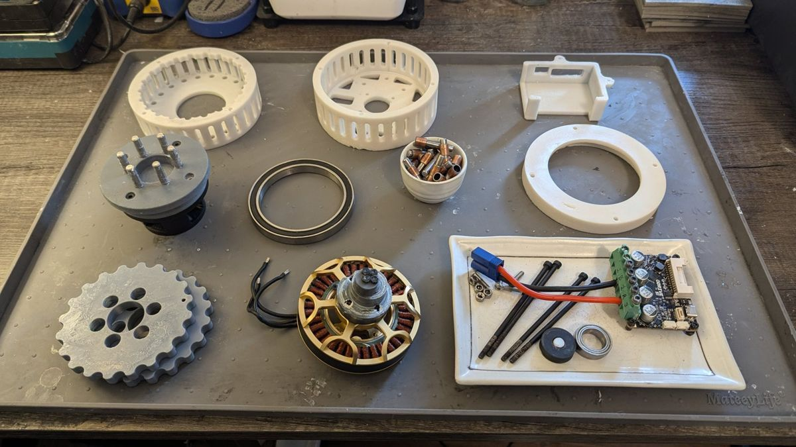

Actuators
Brushless joint actuators
Compact cycloidal and planetary reducers paired with brushless motors and field-oriented-control drives, sized for real manipulator loads.
Santa Cruz, California · Robotic actuators, arms and teleoperation
XR Robotics designs brushless robotic actuators, the arms built from them, and VR teleoperation to drive them. Every design so far has been built, load-tested and published openly with full build instructions and bills of materials.

What we work on
Actuators
Compact cycloidal and planetary reducers paired with brushless motors and field-oriented-control drives, sized for real manipulator loads.
Arms & grippers
Carbon-fiber arms that combine our actuators into base, shoulder and elbow joints, with a parallel gripper and wrist rotation at the end.
Teleoperation
A consumer VR headset and hand controllers drive the arm directly, so an operator can move it naturally from their own hand position.
Next
Turning the low-cost actuator architecture into a metal, vacuum-compatible engineering model, then testing it in thermal vacuum.
Hardware
Each design is documented with CAD, a bill of materials and motor-control settings, so anyone can build and test it.



A 20:1 cycloidal actuator with two high-eccentricity disks, a 90KV brushless motor and an ODrive S1 drive with onboard encoder. We moved to cycloidal gearing after testing printed and commercial planetary reducers, for its torque density and shock tolerance.
| Reduction | 20:1, two-disk cycloidal |
|---|---|
| Peak holding torque | 55 Nm |
| Peak working torque | 29.37 Nm |
| Motor / drive | Eaglepower 8308 90KV BLDC · ODrive S1 FOC |
| Mass | 1,685 g |
| Parts cost | $319 ($169 with an alternative controller) |
| Structure | SLA resin, 12 printed parts |



A 50:1 planetary brushless actuator and the multi-axis arm it drives. We load-tested it to destruction to find its real failure margin, and the assembled arm now runs under VR teleoperation.
| Reduction | 50:1 commercial planetary |
|---|---|
| Rated torque | 20 Nm nominal |
| Destructive test | About 76 Nm before gearbox failure |
| Motor / drive | Eaglepower 8308 90KV BLDC · ODrive S1 FOC |
| Mass / parts cost | 1,480 g · $263 |
A two-degree-of-freedom parallel gripper with wrist rotation, driven by two 25 kg servos and Teensy 4.1 firmware.
Build log
The designs came out of iteration. Each step fixed a failure we found under load.
We began with the open-source OpenQDD actuator. Its SLA-printed parts did not give enough torque and broke repeatedly under load.
We tested printed planetary, compound planetary, and commercial steel-and-nylon planetary gearboxes inside printed housings.
An arm on printed planetary joints with the SimpleGripper at the wrist. The printed gearing beat the steel-and-nylon gearbox on torque.
Cycloidal gearing chosen for torque density and robustness in a compact package. Published with a full build guide.
A commercial 50:1 planetary path, tested to failure. M2 actuators now drive the arm under VR teleoperation.
Metal structures, low-outgassing materials and space lubrication, followed by thermal-vacuum testing.



Next: space
Satellite mechanisms, docking hardware and in-space servicing all need actuators that survive vacuum, extreme temperature swings and launch loads. Space-rated actuators are mostly custom, low-volume parts that are expensive and slow to get.
Terrestrial robotics has pushed capable joint actuators down to a few hundred dollars. Our next project redesigns OpenCycloid as a vacuum-compatible engineering model and measures how it performs in thermal vacuum. None of our hardware has been tested in vacuum yet; producing that first data is the point of this work.
| Element | Prototype today | Engineering model (planned) |
|---|---|---|
| Structure | 3D-printed resin / PLA | Machined aluminum and stainless steel |
| Lubrication | White lithium grease | MoS₂ dry film vs. space-grade PFPE grease |
| Materials | Not screened | Screened to ASTM E595 outgassing criteria |
| Cooling | Air vents, convection | Conductive heat paths, temperature telemetry |
| Validation | Bench and destructive load tests | Instrumented test stand, life cycling, thermal vacuum |
Team
Founder · Project lead
Designer of OpenCycloid, Romulus M2 and SimpleGripper, with more than a decade of hands-on additive and subtractive manufacturing. Director of the Santa Cruz County Small Business Development Center. MBA, Boston University.
Co-founder · Mechanical
Staff Research Scientist at the Desert Research Institute, building automated measurement systems for peer-reviewed research. Previously fault analysis on automated systems at Tesla. M.S. Mechanical Engineering, University of Nevada, Reno.
Co-founder · Electronics & controls
Hardware and embedded engineer since 2017, including battery packs that added about two hours of runtime per robot at delivery-robot startup Kiwi Campus. Five years as a senior DevOps/SRE engineer.
Advisor
Business professor at Cuesta College and former Small Business Development Center director. Advises on customer discovery and commercialization. Ed.D., MBA.
Contact
We want to hear what torque, mass, temperature range and price your application needs.
alexander.dean.pedersen@gmail.com
Alexander Pedersen, Founder